4.恐龙回来了
-
梁龙
梁龙是目前所发现身体最长的恐龙之一， 脖子长8米， 身体长5米，尾巴有14米长，但体重只有10吨。

-
腕龙
腕龙是体重最重的恐龙，有些腕龙的体型比梁龙还要长。
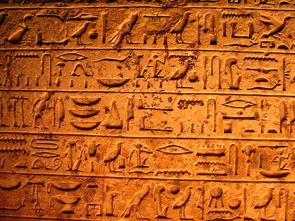 -
雷龙
雷龙身长21米，体重约30吨。
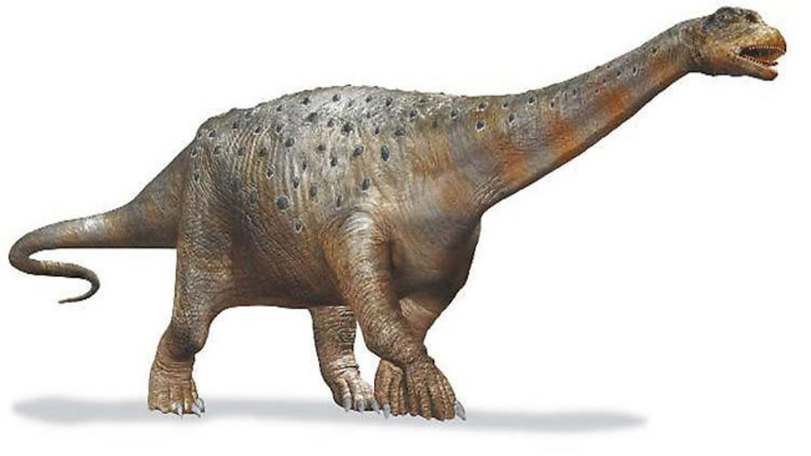 -
剑龙
剑龙的背上的大骨板是竖立起来，左右互相错开排列成一排或两排。前面头部是剑龙的脑袋，尾骨空隙那些比较粗的神经，只是用来协助大脑控制后脚和尾巴的动作。
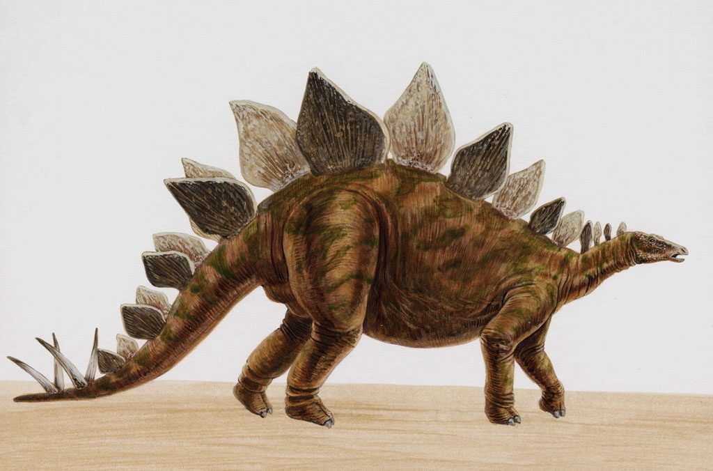 -
霸王龙
霸王龙是一种凶猛的食肉恐龙。它的头骨高而侧扁，霸王龙的双眼向前，具有立体视觉，视觉很好，头骨具有两个很大的眶前孔，眼眶呈椭圆形。
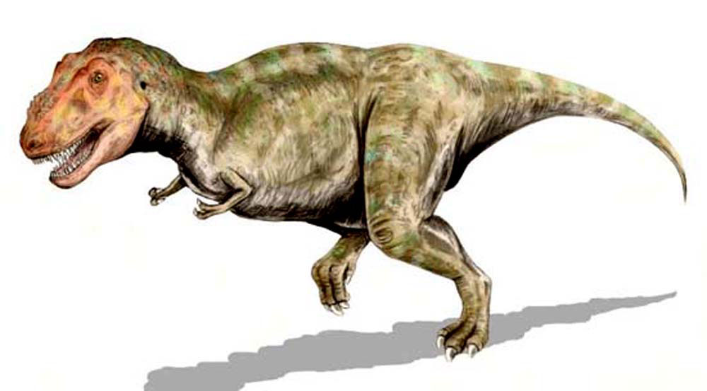 -
棘龙
棘龙的背部有明显的长棘，是由脊椎骨的神经棘延长而成，高度最高可达2米，长棘之间推断生前有皮肤连结，形成一个巨大帆状物。这帆状物的功能很可能包含调节体温、储存脂肪能量、散发热量、吸引异性、威胁对手、吸引猎物等。
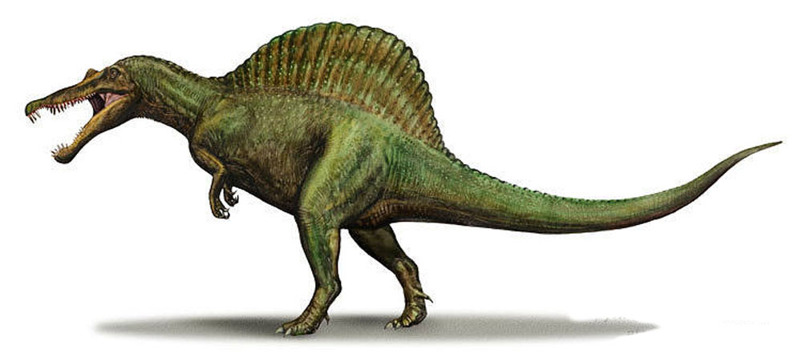 -
角龙
角龙是用四只脚行走，尾巴短小。是食草性动物。它们的上下颚和头骨都十分坚硬，嘴型就像有钩的喙，有细密锐利的牙齿。还有它脖子上的颈盾可以支撑颈部肌肉，也可以用来保护自己。
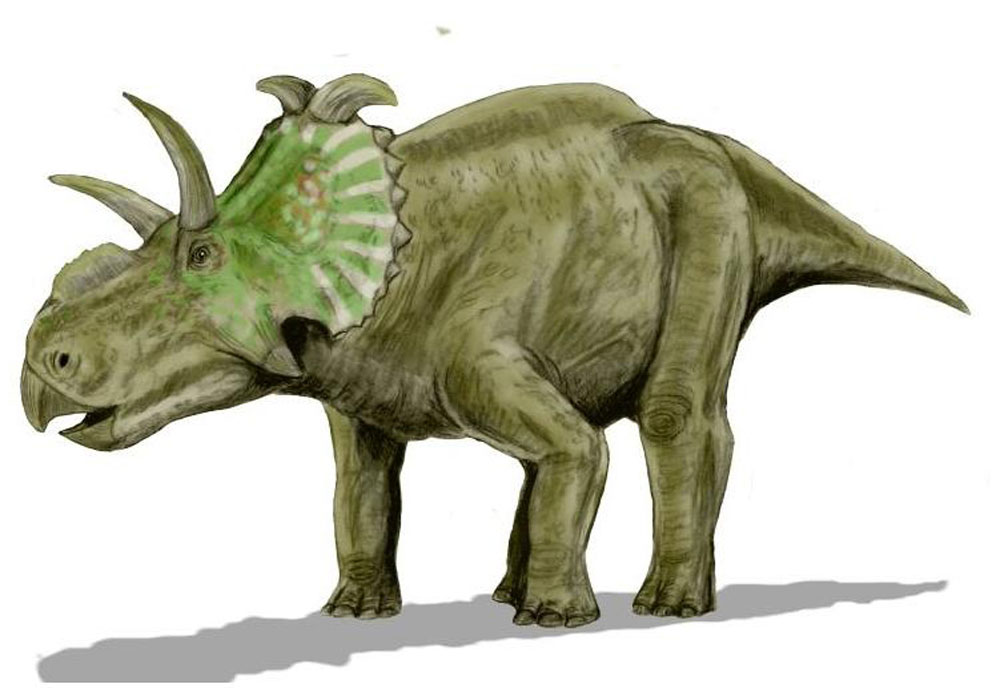 -
风神翼手
翼手龙是体型最大的飞行物，它张开翅膀一端到另一端，全长可达15米。
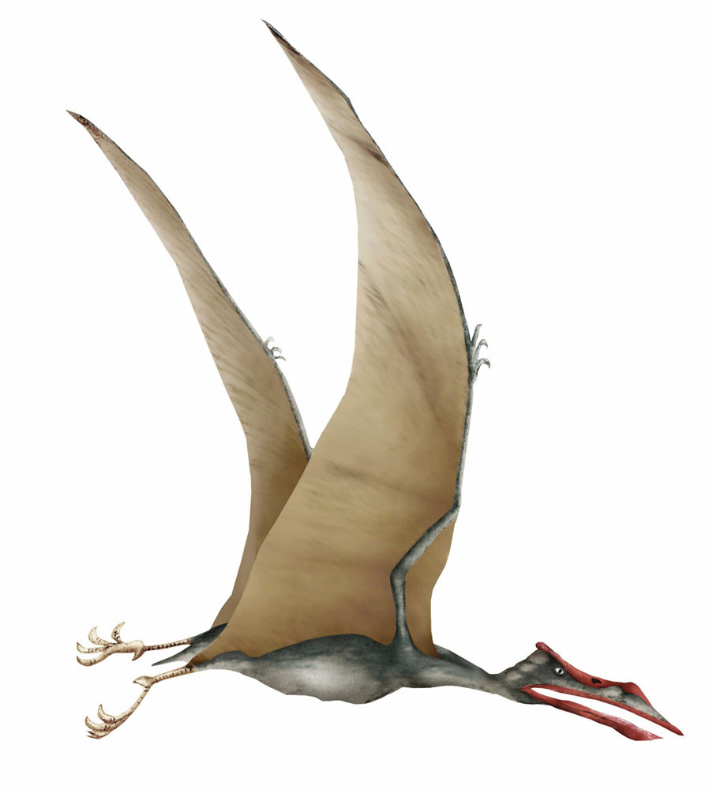 -
禽龙
禽龙是大型草食性动物，身长约10米，高3~4米，前手拇指有一尖爪，可能用来抵抗掠食动物，或是协助进食。
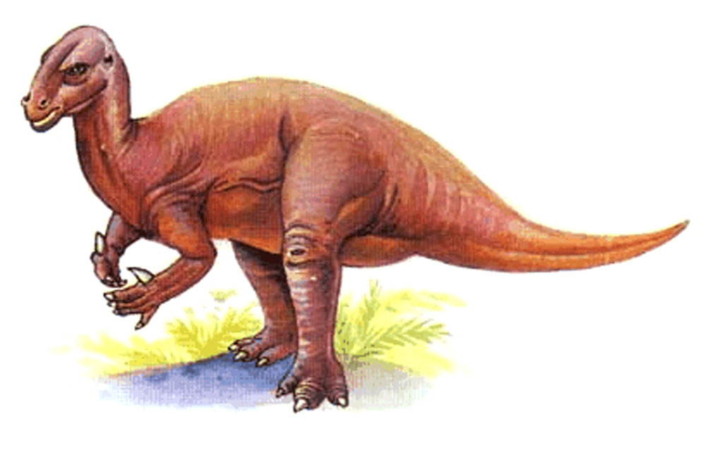 -
蹲禽龙
蹲禽龙是原始恐龙之一，四足矮胖体型，鼻子长着角状结构，颇似哺乳动物。
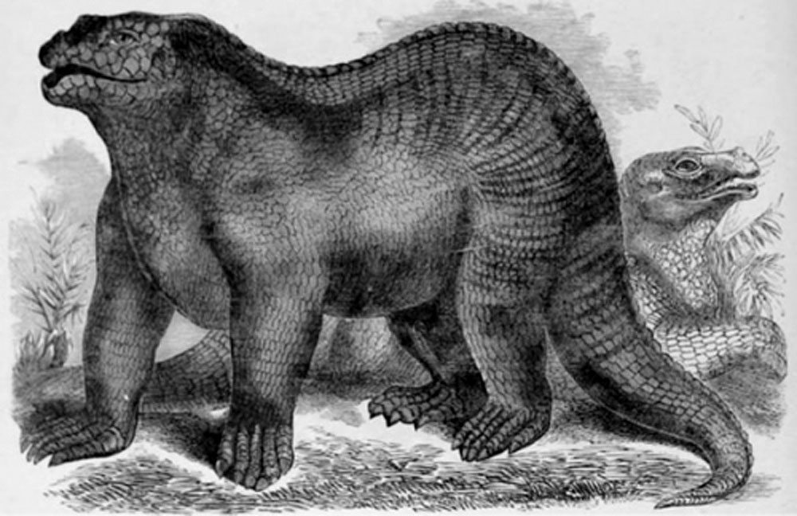 -
板龙
板龙是2亿年前最早出现的恐龙代表。身长8米，如果只用后脚站立大约高5~6米。它可以用细小的牙齿撕裂树叶，前肢尖锐的爪子则可以帮助它抓取食物或抵制敌人的攻击。
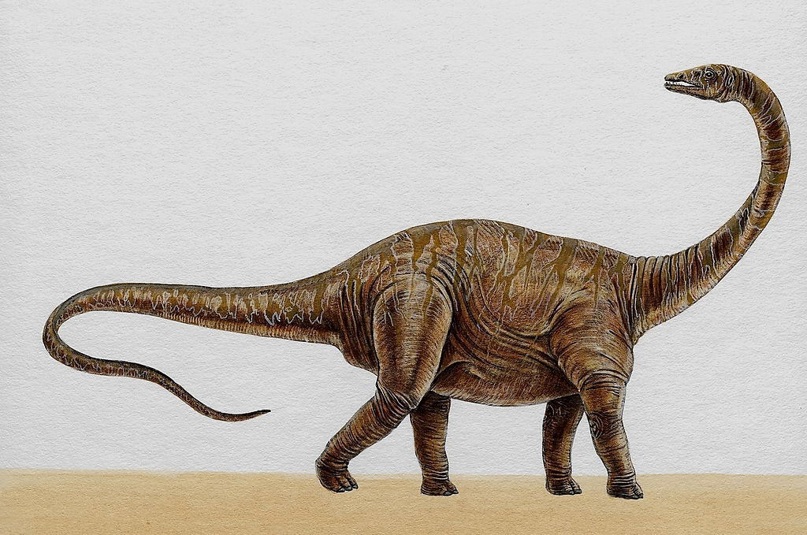 -
厚头龙
厚头龙的头长得很奇怪，头颅厚度超过25厘米，有的科学家认为这也许是因为它们在求偶的时候必须像现在绵羊和山羊一样，要经过撞头比赛才能成功所造成的。
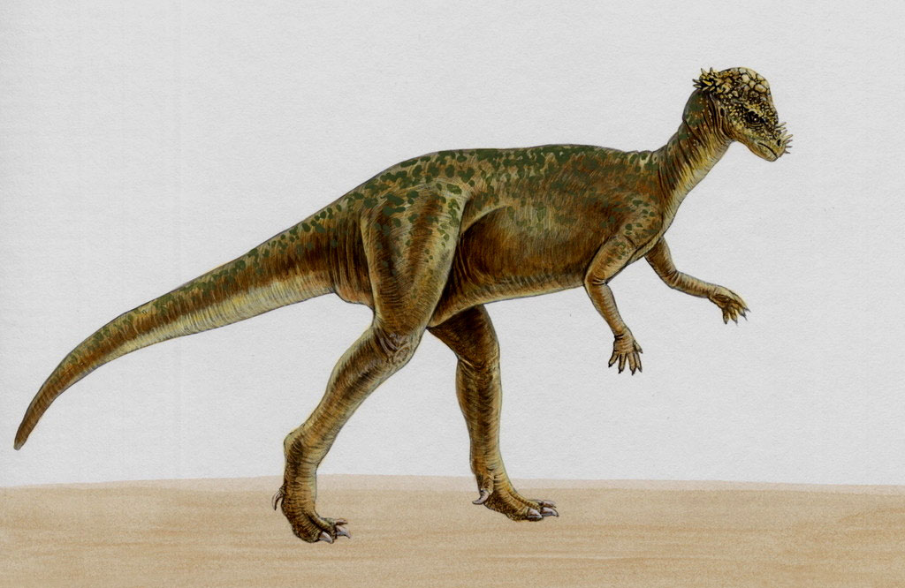 -
细颚龙
细颚龙身长60厘米，体重约3公斤，生存在1亿年前，它的特征是有一个可爱的下巴。它和跳足龙都属于目前发现体型最小的恐龙。
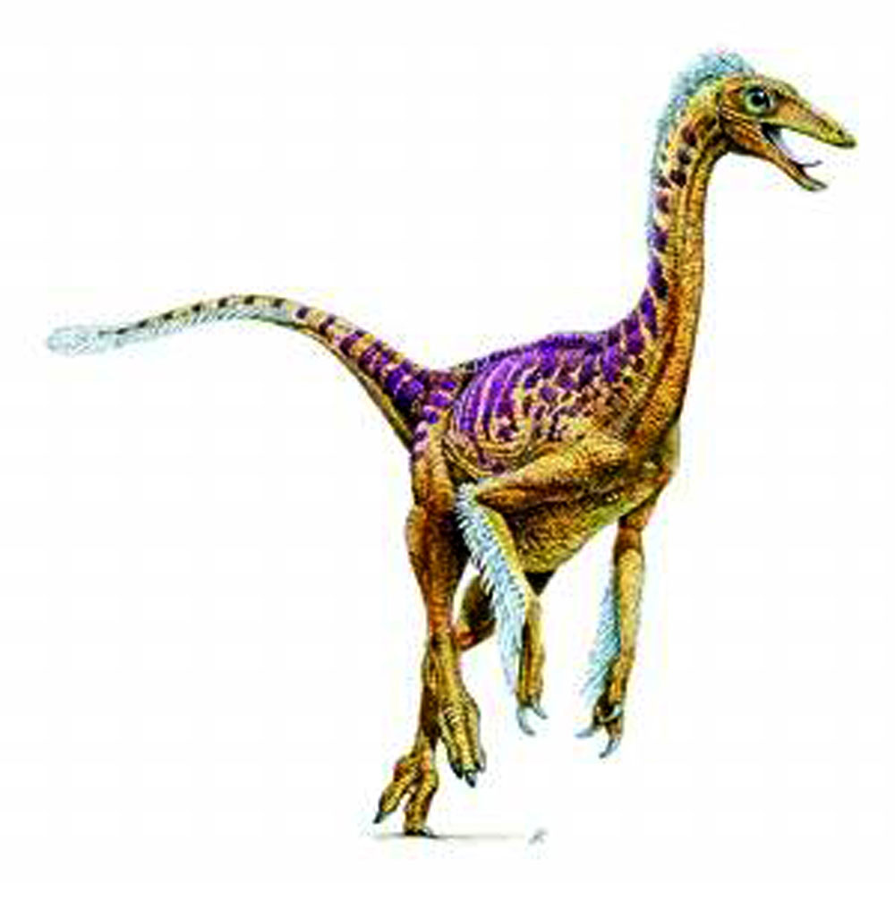 -
跳足龙
跳足龙身长60厘米，体重很轻，大约只有1公斤，行动敏捷，平常吃小昆虫类的小生物。

-
蛇颈龙
蛇颈龙主要生活在海洋中，脖子极度伸长，活像一条蛇，身体宽扁，鳍脚犹如四支很大的划船的桨，使身体进退自如，转动灵活。长颈伸缩自如，可以攫取相当远处的食物。
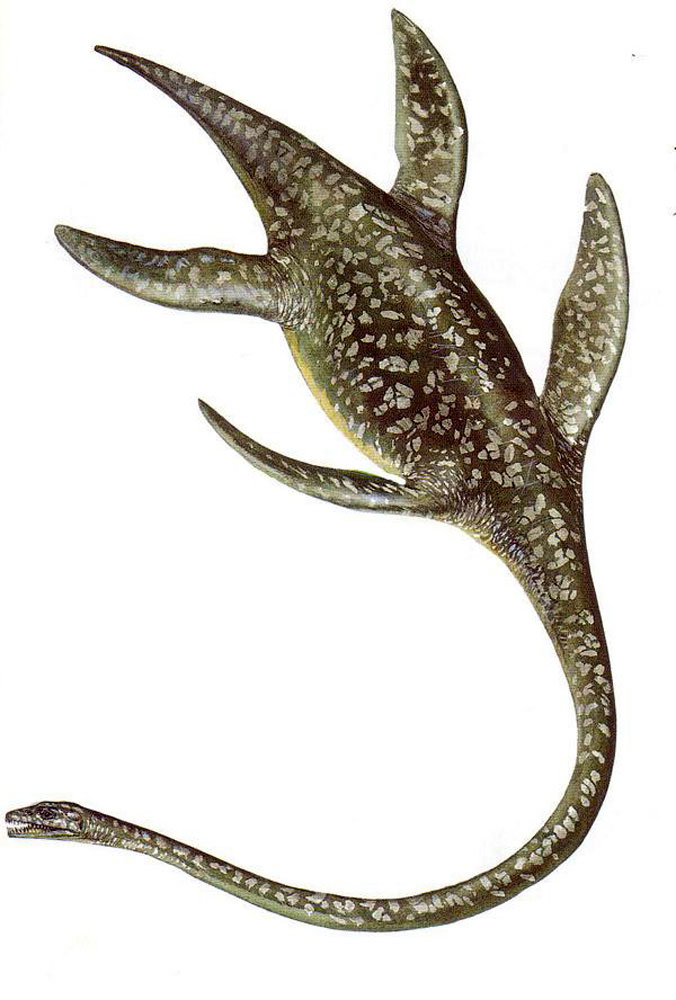 -
恐龙大汇集
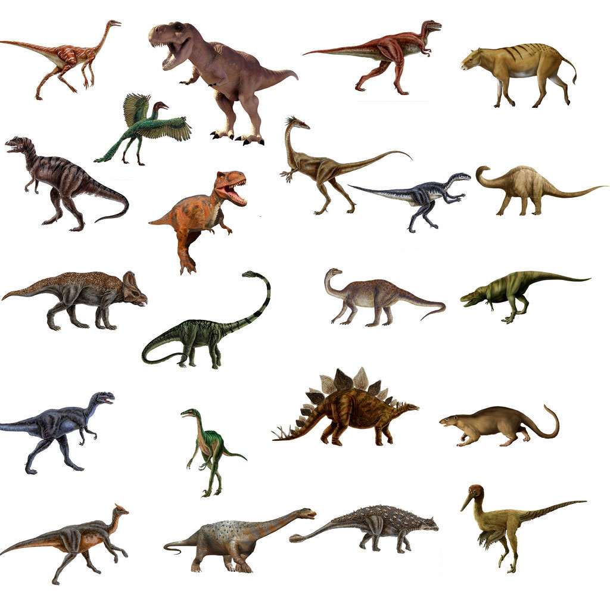